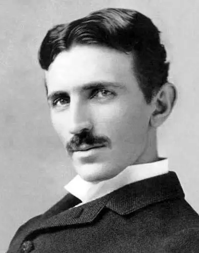
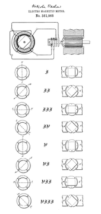
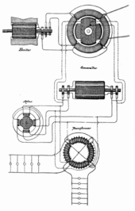
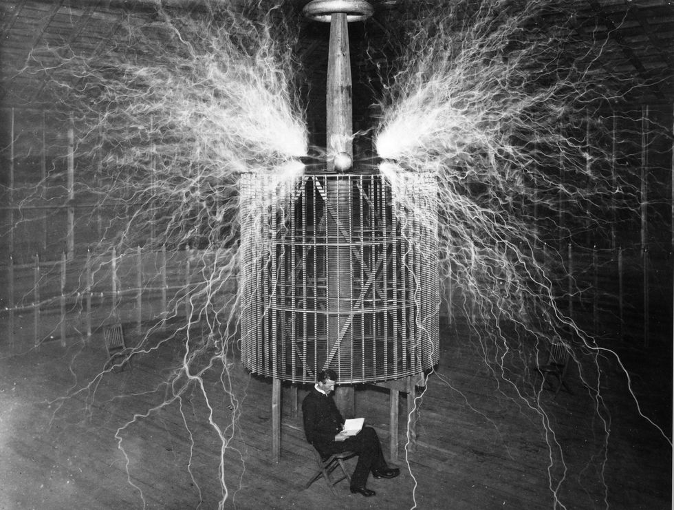

Nikola Tesla
(1856-1943)
Introduction
Born and raised in the Austrian Empire,
Tesla studied engineering and physics in the 1870s without receiving a degree, gaining practical experience in the early 1880s working in telephony and at Continental Edison in the new electric power industry. In 1884 he emigrated to the United States, where he became a naturalized citizen. He worked for a short time at the Edison Machine Works in New York City before he struck out on his own. With the help of partners to finance and market his ideas, Tesla set up laboratories and companies in New York to develop a range of electrical and mechanical devices. His alternating current (AC) induction motor and related polyphase AC patents, licensed by Westinghouse Electric in 1888, earned him a considerable amount of money and became the cornerstone of the polyphase system which that company eventually marketed.
Family Background
Nikola Tesla was born an ethnic Serb in the village of Smiljan, within the Military Frontier, in the Austrian Empire (present day Croatia), on 10 July [O.S. 28 June] 1856.[14][15] His father, Milutin Tesla (1819–1879),[16] was a priest of the Eastern Orthodox Church.[17][18][19][20]
Tesla's mother, Đuka Mandić (1822–1892), whose father was also an Eastern Orthodox Church priest,[21] had a talent for making home craft tools and mechanical appliances and the ability to memorize Serbian epic poems. Đuka had never received a formal education. Tesla credited his eidetic memory and creative abilities to his mother's genetics and influence.[22][23] Tesla's ancestors were from western Serbia, near Montenegro.[
Inventions: AC and induction motor
In late 1886, Tesla met Alfred S. Brown, a Western Union superintendent, and New York attorney Charles Fletcher Peck.[67] The two men were experienced in setting up companies and promoting inventions and patents for financial gain.[68] Based on Tesla's new ideas for electrical equipment, including a thermo-magnetic motor idea,[69] they agreed to back the inventor financially and handle his patents. Together they formed the Tesla Electric Company in April 1887, with an agreement that profits from generated patents would go 1⁄3 to Tesla, 1⁄3 to Peck and Brown, and 1⁄3 to fund development.[68] They set up a laboratory for Tesla at 89 Liberty Street in Manhattan, where he worked on improving and developing new types of electric motors, generators, and other devices.
In 1887, Tesla developed an induction motor that ran on alternating current (AC), a power system format that was rapidly expanding in Europe and the United States because of its advantages in long-distance, high-voltage transmission. The motor used polyphase current, which generated a rotating magnetic field to turn the motor (a principle that Tesla claimed to have conceived in 1882).[70][71][72] This innovative electric motor, patented in May 1888, was a simple self-starting design that did not need a commutator, thus avoiding sparking and the high maintenance of constantly servicing and replacing mechanical brushes.[73][74]
Along with getting the motor patented, Peck and Brown arranged to get the motor publicized, starting with independent testing to verify it was a functional improvement, followed by press releases sent to technical publications for articles to run concurrently with the issue of the patent.[75] Physicist William Arnold Anthony (who tested the motor) and Electrical World magazine editor Thomas Commerford Martin arranged for Tesla to demonstrate his AC motor on 16 May 1888 at the American Institute of Electrical Engineers.[75][76] Engineers working for the Westinghouse Electric & Manufacturing Company reported to George Westinghouse that Tesla had a viable AC motor and related power system—something Westinghouse needed for the alternating current system he was already marketing. Westinghouse looked into getting a patent on a similar commutator-less, rotating magnetic field-based induction motor developed in 1885 and presented in a paper in March 1888 by Italian physicist Galileo Ferraris, but decided that Tesla's patent would probably control the market



About
A man,Genius of its era who created technologies that are still used up to this day.
Technologies that were created ahead of its time for that he didn't receive what he deserved yet he never complained.
Truly a legend of all time.